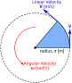

A Simple Velocity Control Node (Move Circle)
The Initial Code¶
Start by returning to the publisher.py file from your part1_pubsub package (or return here), and copy the contents into your new move_circle.py file. Then, adapt the code as follows.
Creating the "Move Circle" Node¶
Imports¶
Once again, rclpy and the Node class from the rclpy.node library are vital for any node we create, so the first two imports will remain the same.
We need to import the message type used by the /cmd_vel topic here though, in order to be able to format velocity commands appropriately. We can find all the necessary information about this message type by using the ros2 topic info command:
And so our message import becomes:
- In place of:
from example_interfaces.msg import String
Change the Class Name¶
Previously our publisher class was called SimplePublisher(), change this to Circle:
Initialising the Class¶
-
Initialise the node with an appropriate name:
-
Change the
create_publisher()parameters:- What is the name of the interface that we are using here?
- What's the name of the topic that we want to publish our velocity commands to?
-
We'll need to publish velocity commands at a rate of at least 10 Hz, so define this here, and then set up a timer accordingly:
Modifying the Timer Callback¶
Here, we'll publish our velocity commands:
def timer_callback(self):
radius = 0.5 # meters
linear_velocity = 0.1 # meters per second [m/s]
angular_velocity = ?? # radians per second [rad/s] # (1)!
topic_msg = TwistStamped() # (2)!
topic_msg.twist.linear.x = linear_velocity
topic_msg.twist.angular.z = angular_velocity
self.my_publisher.publish(topic_msg) # (3)!
self.get_logger().info( # (4)!
f"Linear Velocity: {topic_msg.twist.linear.x:.2f} [m/s], "
f"Angular Velocity: {topic_msg.twist.angular.z:.2f} [rad/s].",
throttle_duration_sec=1, # (5)!
)
-
Having defined the radius of the circle, and the linear velocity that we want the robot to move at, how would we calculate the angular velocity that should be applied?
Consider the equation for angular velocity:

\[ \omega=\frac{v}{r} \] -
/cmd_velusesTwistStampedmessages, so we instantiate one here, and assign the linear and angular velocity values (as set above) to the relevant message fields. Remember, we talked about all this here. -
Once the appropriate velocity fields have been set, publish the message.
-
Publish a ROS Log Message to inform us (in the terminal) of the velocity control values that are being published by the node.
-
Remember in the Odometry Subscriber how we used a counter (
self.counter) and anif()statement to control the rate at which these log messages were generated?We can actually achieve exactly the same thing by simply supplying a
throttle_duration_secargument to theget_logger().info()call. Much easier, right?
Updating "Main"¶
Once again, don't forget to update any relevant parts of the main function to ensure that we're instantiating the Circle() class, spinning and shutting it down correctly.
Package Dependencies¶
Our move_circle.py node has a new package import:
Our part2_navigation package therefore has a new dependency, so we need to add this to our package's package.xml file.
Earlier on we added nav_msgs to this (for the odom_subscriber.py node). Below this, add a new <exec_depend> for geometry_msgs:
<exec_depend>rclpy</exec_depend>
<exec_depend>nav_msgs</exec_depend>
<exec_depend>geometry_msgs</exec_depend> <!-- (1)! -->
- ADD THIS LINE!
Save the file and close it.